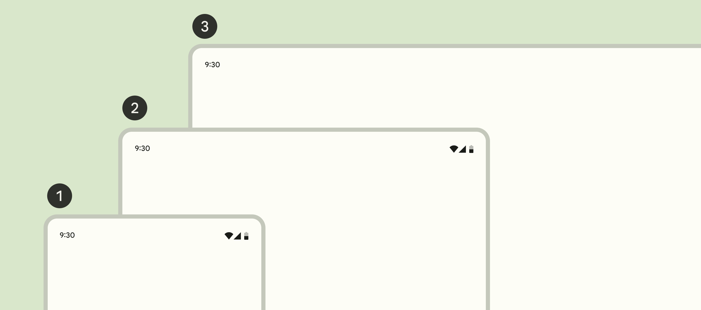

质感设计
1. 基础
1.1. 可访问性
1.2. 内容设计
1.3. 设计变量
1.4. 交互
1.5. 布局
布局（Layout）是屏幕上视觉元素的排列。布局可以引导用户聚焦想要执行的动作。为了提供一致的体验，布局应当考虑适配紧凑、适中、宽大等多类窗口尺寸。
1.5.1. 布局属性

Figure 1: 布局术语
- 列（Column）。面板中一个或多个垂直的块。
- 折叠区（Fold）。可折叠设备或双屏设备上将两个显示区域分隔开的可折叠部分。
- 外边距（Margin）。屏幕边缘和可视元素之间的距离。
- 面板（Pane）。包含其他组件或元素的布局容器。
- 间隔（Spacer）。两个面板之间的空间。
1.5.2. 布局工具
布局常用的工具有：
- 分组（Grouping）将共享相同上下文的元素联系在一起。
- 显著分组（Explicit grouping）使用诸如边框（outline）、分隔符（divider）或阴影（shadow）等边界将元素包围起来。比如卡片是显著分组。
- 隐含分组（Implicit grouping）将临近元素关联起来。元素之间没有线或阴影，而是使用开放空间分隔。比如轮播（Carousel）是隐含分组。
- 外边距（Margin）是窗口边缘和元素之间的距离。
- 间隔（Spacer）是两个面板之间的空间，宽度24dp。
- 内边距（Padding）是两个元素之间的距离，分为垂直内边距和水平内边距。内边距是4dp的整数倍。
- 像素密度（Pixel density）是屏幕上每英尺长度内的像素数。
- 密度无关像素（Density-independent pixel）是在像素密度为160的屏幕上的物理像素。
- 信息密度（Information density）受到布局的空间维度（外边距、内边距、间隔宽度等）的影响。高信息密度有助于客户快速浏览或对比信息。提高信息密度可以让列表、表格和长表单在屏幕上显示更多的内容。但信息密度过高可能导致交互元素过小，引发误操作。
1.5.3. 布局区域

1.5.4. 内容区域
内容区域（Body region）是展示应用主要内容的区域。这些内容包括：图片、文字、列表、卡片、按钮、应用栏、搜索栏等。内容区域通常被划分为一个或多个面板。面板是内容区域中一组相关的内容。根据面板尺寸的约束，面板可以分为固定尺寸（Fixed）或自适应（Flexible）的。布局区域和面板的尺寸和相对位置应当由设备窗口尺寸的类型决定。
- 紧凑窗口
- 1个面板。
- 适中窗口
- 1个或2个面板。
- 宽大窗口
- 2个或1个面板。
面板是包含应用的框架，这一点和窗口不同。多窗口视图是系统界面的特性，用来同时显示多个应用。单一面板布局通常使用自适应尺寸。两面板布局通常使用一个固定尺寸面板和一个自适应尺寸面板，或者使用两个尺寸对称的自适应尺寸面板。面板可以包含一个顶部应用栏（Top app bar）和一个底部应用栏（Bottom app bar）。应用栏中动作按钮应当在紧凑窗口中折叠显示，在宽大窗口中展开显示。
1.5.5. 窗口尺寸分类

Figure 4: 窗口尺寸分类
| 窗口尺寸分类 | 宽度（dp） | 示例 |
|---|---|---|
| 紧凑（Compact） | < 600 | 手机（竖屏） |
| 适中（Medium） | 600 - 840 | 平板电脑（竖屏）、可折叠手机（竖屏展开） |
| 宽大（Expanded） | > 840 | 手机（横屏）、平板电脑（横屏）、可折叠手机（横屏展开）、电脑 |
产品应当为三种不同窗口尺寸分类设计不同的布局。
| 窗口尺寸分类 | 面板数量 | 导航 | 信息控件 | 动作控件 |
|---|---|---|---|---|
| 紧凑 | 1 | 导航栏、模态导航抽屉 | 简单对话框、全屏对话框 | bottom sheet |
| 适中 | 1个或2个 | 导航导轨、模态导航抽屉 | 简单对话框 | 菜单 |
| 宽大 | 2个或1个 | 导航导轨、模态或标准导航抽屉 | 简单对话框 | 菜单 |
2. 样式
2.1. 色彩
色彩（Color）可以表达意义、信息层级和状态。质感设计以5种关键色彩为基础，衍生出20余种色彩职能。
2.1.1. 关键色彩
质感设计以5种关键色彩（key color）为基础：
- 显著色彩（Accent color）
- 主关键色彩（Primary key color）用于浮动按钮、主要按钮、主要状态等需要用户特别关注的组件。
- 次关键色彩（Secondary key color）用于显著程度稍弱一些的组件。
- 第三关键色彩（Tertiary key color）用于平衡主关键色彩和次关键色彩。
- 中性色彩（Neutral color）
- 中性色彩用于背景（background）的表层色彩（surface color）。
- 中性色彩变体（Neutral color variant）用于中等强调级别的文本、图标和组件边框（Outline）。
除此以外，质感设计提供了警示色彩（error color）。它是一种附加色彩（additional color）。
2.1.2. 色彩空间和记号
质感设计采用HCT色彩空间。HCT表示色相（Hue）、饱和度（Chroma）和色调（Tone）。质感设计通过调整关键色彩的色调生成不同职能的色彩。色调描述色彩的亮度，0是最暗的黑色，100是最亮的白色。质感设计采用名字加色调值来表示衍生色彩。比如tertiary40表示将第三关键色彩的色调设定为40而产生的色彩。
2.1.3. 色彩职能
每种显著色彩可以衍生出4种色彩职能。以主关键色彩为例：
| 色彩职能 | 说明 | 色彩值 |
|---|---|---|
| 主色彩（Primary） | 基础色彩 | primary40 |
| 主上层色彩（On-Primary） | 用于主色彩上层的文本和图标等 | primary100 |
| 主容器色彩（Primary container） | 用于强调程度弱于主色彩的元素 | primary90 |
| 主容器上层色彩（On-Primary container） | 用于主容器色彩上层的文本、图标等 | primary10 |
表层色彩（Surface color）用于将一个区域与屏幕背景或其他区域隔离。表层色彩有5种职能。
| 色彩职能 | 说明 | 色彩值 |
|---|---|---|
| 暗表层色彩（Surface dim） | neutral87 | |
| 表层色彩（Surface） | neutral98 | |
| 亮表层色彩（Surface bright） | neutral98 | |
| 最低表层容器色彩（Surface container lowest） | neutral100 | |
| 低表层容器色彩（Surface container low） | neutral96 | |
| 表层容器色彩（Surface container） | neutral94 | |
| 高表层容器色彩（Surface container high） | neutral92 | |
| 最高表层容器色彩（Surface container highest） | neutral90 | |
| 表层上层色彩（On surface） | neutral10 | |
| 表层上层色彩变体（On surface variant） | neutralVariant30 |
边框色彩（Outline color）用于绘制元素边框。
| 色彩职能 | 色彩值 |
|---|---|
| 边框色彩（Outline） | neutralVariant50 |
| 边框色彩变体（Outline variant） | neutralVariant80 |
| 色彩职能 | 色彩值 |
|---|---|
| 表层翻转色彩（Inverse surface） | neutral20 |
| 表层上层翻转色彩（Inverse on surface） | neutral95 |
| 主翻转色彩（Inverse primary） | primary80 |
| 主固定色彩（Primary fixed） | primary90 |
| 暗主固定色彩（Primary fixed dim） | primary80 |
| 第二固定色彩（Secondary fixed） | secondary90 |
| 暗第二固定色彩（Secondary fixed dim） | secondary80 |
| 第三固定色彩（Tertiary fixed） | tertiary90 |
| 暗第三固定色彩（Tertiary fixed dim） | tertiary80 |
| 颜色职能 | 系统变量 | 引用变量 | 暗黑模式引用变量 | 默认值 | 暗黑模式默认值 |
|---|---|---|---|---|---|
| 主色彩 | md.sys.color.primary | md.ref.palette.primary40 | md.ref.palette.primary80 | 6750A4 | D0BCFF |
| 主容器色彩 | md.sys.color.primary-container | md.ref.palette.primary90 | md.ref.palette.primary30 | EADDFF | 4F378B |
| 主上层色彩 | md.sys.color.on-primary | md.ref.palette.primary100 | md.ref.palette.primary20 | FFFFFF | 371E73 |
| 主容器上层色彩 | md.sys.color.on-primary-container | md.ref.palette.primary10 | md.ref.palette.primary90 | 21005E | EADDFF |
| 主翻转色彩 | md.sys.color.inverse-primary | md.ref.palette.primary80 | md.ref.palette.primary40 | D0BCFF | 6750A4 |
| 第二色彩 | md.sys.color.secondary | md.ref.palette.secondary40 | md.ref.palette.secondary80 | 625B71 | CCC2DC |
| 第二容器色彩 | md.sys.color.secondary-container | md.ref.palette.secondary90 | md.ref.palette.secondary30 | E8DEF8 | 4A4458 |
| 第二上层色彩 | md.sys.color.on-secondary | md.ref.palette.secondary100 | md.ref.palette.secondary20 | FFFFFF | 332D41 |
| 第二容器上层色彩 | md.sys.color.on-secondary-container | md.ref.palette.secondary10 | md.ref.palette.secondary90 | 1E192B | E8DEF8 |
| 第三色彩 | md.sys.color.tertiary | md.ref.palette.tertiary40 | md.ref.palette.tertiary80 | 7D5260 | EFB8C8 |
| 第三容器色彩 | md.sys.color.tertiary-container | md.ref.palette.tertiary90 | md.ref.palette.tertiary30 | FFD8E4 | 633B48 |
| 第三上层色彩 | md.sys.color.on-tertiary | md.ref.palette.tertiary100 | md.ref.palette.tertiary20 | FFFFFF | 492532 |
| 第三容器上层色彩 | md.sys.color.on-tertiary-container | md.ref.palette.tertiary10 | md.ref.palette.tertiary90 | 370B1E | FFD8E4 |
| 表层色彩 | md.sys.color.surface | md.ref.palette.neutral98 | md.ref.palette.neutral6 | FEF7FF | 141218 |
| 暗表层色彩 | md.sys.color.surface-dim | md.ref.palette.neutral87 | md.ref.palette.neutral6 | DED8E1 | 141218 |
| 亮表层色彩 | md.sys.color.surface-bright | md.ref.palette.neutral98 | md.ref.palette.neutral24 | FEF7FF | 3B383E |
| 最低表层容器色彩 | md.sys.color.surface-container-lowest | md.ref.palette.neutral100 | md.ref.palette.neutral4 | FFFFFF | 0F0D13 |
| 低表层容器色彩 | md.sys.color.surface-container-low | md.ref.palette.neutral96 | md.ref.palette.neutral10 | F7F2FA | 1D1B20 |
| 表层容器色彩 | md.sys.color.surface-container | md.ref.palette.neutral94 | md.ref.palette.neutral12 | F3EDF7 | 211F26 |
| 高表层容器色彩 | md.sys.color.surface-container-high | md.ref.palette.neutral92 | md.ref.palette.neutral17 | ECE6F0 | 2B2930 |
| 最高表层容器色彩 | md.sys.color.surface-container-highest | md.ref.palette.neutral90 | md.ref.palette.neutral22 | E6E0E9 | 36343B |
| 表层色彩变体 | md.sys.color.surface-variant | md.ref.palette.neutral-variant90 | md.ref.palette.neutral-variant30 | E7E0EC | 49454F |
| 表层上层色彩 | md.sys.color.on-surface | md.ref.palette.neutral10 | md.ref.palette.neutral90 | 1C1B1F | E6E1E5 |
| 表层上层色彩变体 | md.sys.color.on-surface-variant | md.ref.palette.neutral-variant30 | md.ref.palette.neutral-variant80 | 49454E | CAC4D0 |
| 表层翻转色彩 | md.sys.color.inverse-surface | md.ref.palette.neutral20 | md.ref.palette.neutral90 | 313033 | E6E1E5 |
| 表层上层翻转色彩 | md.sys.color.inverse-on-surface | md.ref.palette.neutral95 | md.ref.palette.neutral20 | F4EFF4 | 313033 |
| 背景色彩 | md.sys.color.background | md.ref.palette.neutral98 | md.ref.palette.neutral6 | FEF7FF | 141218 |
| 背景上层色彩 | md.sys.color.on-background | md.ref.palette.neutral10 | md.ref.palette.neutral90 | 1C1B1F | E6E1E5 |
| 警示色彩 | md.sys.color.error | md.ref.palette.error40 | md.ref.palette.error80 | B3261E | F2B8B5 |
| 警示容器色彩 | md.sys.color.error-container | md.ref.palette.error90 | md.ref.palette.error30 | F9DEDC | 8C1D18 |
| 警示上层色彩 | md.sys.color.on-error | md.ref.palette.error100 | md.ref.palette.error20 | FFFFFF | 601410 |
| 警示容器上层色彩 | md.sys.color.on-error-container | md.ref.palette.error10 | md.ref.palette.error90 | 410E0B | F9DEDC |
| 边框色彩 | md.sys.color.outline | md.ref.palette.neutral-variant50 | md.ref.palette.neutral-variant60 | 79747E | 938F99 |
| 边框色彩变体 | md.sys.color.outline-variant | md.ref.palette.neutral-variant80 | md.ref.palette.neutral-variant30 | C4C7C5 | 444746 |
| 阴影色彩 | md.sys.color.shadow | md.ref.palette.neutral0 | md.ref.palette.neutral0 | 000000 | 000000 |
| 表层浅色 | md.sys.color.surface-tint-color | md.sys.color.primary | md.sys.color.primary | 6750A4 | D0BCFF |
| 蒙层色彩 | md.sys.color.scrim | md.ref.palette.neutral0 | md.ref.palette.neutral0 | 000000 | 000000 |

Figure 5: 色彩职能
2.2. 层叠高度
2.3. 图标
2.4. 动作
2.5. 形状
2.6. 版面设计
版面设计让文字清晰美观。排版风格包括展示（Display）、头条（Headline）、标题（Title）、正文（Body）和标签（Label）。每种风格分为大号、中号、小号3个缩放级别。展示用于简短的、重要的文字和数字。
| 职能 | 设计变量 | 默认值 |
|---|---|---|
| 大号展示 | md.sys.typescale.display-large.font | Roboto |
| md.sys.typescale.display-large.line-height | 64 | |
| md.sys.typescale.display-large.size | 57 | |
| md.sys.typescale.display-large.tracking | -0.25 | |
| md.sys.typescale.display-large.weight | 400 | |
| 中号展示 | md.sys.typescale.display-medium.font | Roboto |
| md.sys.typescale.display-medium.line-height | 52 | |
| md.sys.typescale.display-medium.size | 45 | |
| md.sys.typescale.display-medium.tracking | 0 | |
| md.sys.typescale.display-medium.weight | 400 | |
| 小号展示 | md.sys.typescale.display-small.font | Roboto |
| md.sys.typescale.display-small.line-height | 44 | |
| md.sys.typescale.display-small.size | 36 | |
| md.sys.typescale.display-small.tracking | 0 | |
| md.sys.typescale.display-small.weight | 400 | |
| 大号头条 | md.sys.typescale.headline-large.font | Roboto |
| md.sys.typescale.headline-large.line-height | 40 | |
| md.sys.typescale.headline-large.size | 32 | |
| md.sys.typescale.headline-large.tracking | 0 | |
| md.sys.typescale.headline-large.weight | 400 | |
| 中号头条 | md.sys.typescale.headline-medium.font | Roboto |
| md.sys.typescale.headline-medium.line-height | 36 | |
| md.sys.typescale.headline-medium.size | 28 | |
| md.sys.typescale.headline-medium.tracking | 0 | |
| md.sys.typescale.headline-medium.weight | 400 | |
| 小号头条 | md.sys.typescale.headline-small.font | Roboto |
| md.sys.typescale.headline-small.line-height | 32 | |
| md.sys.typescale.headline-small.size | 24 | |
| md.sys.typescale.headline-small.tracking | 0 | |
| md.sys.typescale.headline-small.weight | 400 | |
| 大号标题 | md.sys.typescale.title-large.font | Roboto |
| md.sys.typescale.title-large.line-height | 28 | |
| md.sys.typescale.title-large.size | 22 | |
| md.sys.typescale.title-large.tracking | 0 | |
| md.sys.typescale.title-large.weight | 400 | |
| 中号标题 | md.sys.typescale.title-medium.font | Roboto |
| md.sys.typescale.title-medium.line-height | 24 | |
| md.sys.typescale.title-medium.size | 16 | |
| md.sys.typescale.title-medium.tracking | 0.15 | |
| md.sys.typescale.title-medium.weight | 500 | |
| 小号标题 | md.sys.typescale.title-small.font | Roboto |
| md.sys.typescale.title-small.line-height | 20 | |
| md.sys.typescale.title-small.size | 14 | |
| md.sys.typescale.title-small.tracking | 0.1 | |
| md.sys.typescale.title-small.weight | 500 | |
| 大号正文 | md.sys.typescale.body-large.font | Roboto |
| md.sys.typescale.body-large.line-height | 24 | |
| md.sys.typescale.body-large.size | 16 | |
| md.sys.typescale.body-large.tracking | 0.5 | |
| md.sys.typescale.body-large.weight | 400 | |
| 中号正文 | md.sys.typescale.body-medium.font | Roboto |
| md.sys.typescale.body-medium.line-height | 20 | |
| md.sys.typescale.body-medium.size | 14 | |
| md.sys.typescale.body-medium.tracking | 0.25 | |
| md.sys.typescale.body-medium.weight | 400 | |
| 小号正文 | md.sys.typescale.body-small.font | Roboto |
| md.sys.typescale.body-small.line-height | 16 | |
| md.sys.typescale.body-small.size | 12 | |
| md.sys.typescale.body-small.tracking | 0.4 | |
| md.sys.typescale.body-small.weight | 400 | |
| 大号标签 | md.sys.typescale.label-large.font | Roboto |
| md.sys.typescale.label-large.line-height | 20 | |
| md.sys.typescale.label-large.size | 14 | |
| md.sys.typescale.label-large.tracking | 0.1 | |
| md.sys.typescale.label-large.weight | 500 | |
| 中号标签 | md.sys.typescale.label-medium.font | Roboto |
| md.sys.typescale.label-medium.line-height | 16 | |
| md.sys.typescale.label-medium.size | 12 | |
| md.sys.typescale.label-medium.tracking | 0.5 | |
| md.sys.typescale.label-medium.weight | 500 | |
| 小号标签 | md.sys.typescale.label-small.font | Roboto |
| md.sys.typescale.label-small.line-height | 16 | |
| md.sys.typescale.label-small.size | 11 | |
| md.sys.typescale.label-small.tracking | 0.5 | |
| md.sys.typescale.label-small.weight | 500 |
3. 组件
组件可以分为动作、信息、聚合、导航、选择、文字输入几种类别。动作控件（如按钮）帮助用户达成某个目标。信息控件（如进度条、消息栏）提供有用信息。聚合控件将一组相关控件组合在一起。导航控件帮助用户在界面之间跳转。选择控件（如开关、日期选择器）帮助用户处理非文本输入。文本输入控件用于输入文本。
3.1. 动作组件
3.1.1. 按钮
按钮是动作控件，允许用户通过一次点击执行操作或进行选择。质感设计提供了9种按钮类型，分别是

- 层叠按钮（Elevated button）
- 色彩填充按钮（Filled button）
- Filled tonal button
- 描边按钮（Outlined button）
- 文本按钮（Text button）
- 图标按钮（Icon button）
- 分段按钮（Segmented button）
- 浮动按钮（Floating action button，FAB）
- 宽浮动按钮（Extended FAB）
这9种类型又划分为高、中、低3种强调级别。
| 强调级别 | 控件 | 选择理由 | 动作示例 |
|---|---|---|---|
| 高 | 宽浮动按钮 | 如果在大屏幕上FAB显得过小，应当使用宽浮动按钮。 | 新建 |
| 浮动按钮 | 屏幕上的主要动作控件，有大中小3种尺寸。 | 新建 | |
| 色彩填充按钮 | 显著性仅次于浮动按钮，用于操作流程中的终端或非阻塞步骤。 | 保存、确认 | |
| 中 | Filled tonal button | 背景色较色彩填充按钮更浅，文字色彩更深。用途与色彩填充按钮类似，但强调性更弱。 | 保存、确认 |
| 层叠按钮 | 背景色较色彩填充按钮更浅，并增加了阴影。用于需要和背景区分开的场景。 | 回复、加入购物车 | |
| 描边按钮 | 需要引起注意的非主要动作。 | 回复、加入购物车 | |
| 低 | 文本按钮 | 强调性低的替代选项 | 查看更多 |
| 分段按钮 | 强调性高于Icon button。 | ||
| 图标按钮 | 可选的辅助性动作。 | 标记、推荐 |
每个屏幕应当为主操作设置单一的显著按钮。对于相同级别的操作，按钮应当水平排列。可以通过调整按钮的强调级别突出引导某个操作。
层叠按钮、色彩填充按钮、Filled tonal button、描边按钮和文本按钮称作普通按钮（Common button）。这些按钮可以包含一个前导图标，图标的高和宽是18dp。按钮的形状是全圆角（fully rounded corner），文字首字母大写。
| 元素 | 设计属性 | 角色 | 设计变量 |
|---|---|---|---|
| 容器 | 色彩 | surface container low | |
| 阴影色 | 阴影 | ||
| Elevation | 级别1 | ||
3.2. 信息组件
徽章 进度条 snackbar
3.3. 聚合组件
3.3.1. bottom sheets
3.3.2. 卡片
3.3.3. carousel
3.3.4. 对话框
3.3.5. 分隔符
3.3.6. 列表
列表（List）是连续的、垂直的、带有索引的文本和图片。列表可以帮助用户快速找到特定条目，施加动作。列表条目要按照逻辑顺序，比如字典序或数字顺序排列。按照列表条目中文字行数划分，列表可以分为单行列表、两行列表和三行列表。列表中的图标、文字和按钮应当按照一致的风格进行设计。
- 列表属性

Figure 6: 列表结构
- 容器（Container）
- 头条（Headline）
- 辅助文本（Supporting text）
- 后置辅助文本（Trailing supporting text）
- 后置图标（Trailing icon）
- 分隔符（Divider）
- 前置肖像容器（Leading avater container）
- 前置肖像标签（Leading avater label text）
- 前置图标（Leading icon）
- 前置视频预览图（Leading video thumbnail）
Table 10: 列表属性 元素 设计属性 职责 值 容器 色彩 表层色彩 md.sys.color.surface 形状 无 md.sys.shape.corner.none 层叠高度 0级 md.sys.elevation.level0 单行容器 高度 56dp 两行容器 高度 72dp 三行容器 高度 88dp 头条 色彩 表层上层色彩 md.sys.color.on-surface 字体 大号正文 md.sys.typescale.body-large.font 行高 大号正文 md.sys.typescale.body-large.line-height 尺寸 大号正文 md.sys.typescale.body-large.size 字间距 大号正文 md.sys.typescale.body-large.tracking 字重 大号正文 md.sys.typescale.body-large.weight 辅助文本 色彩 表层上层色彩变体 md.sys.color.on-surface-variant 字体 中号正文 md.sys.typescale.body-medium.font 行高 中号正文 md.sys.typescale.body-medium.line-height 尺寸 中号正文 md.sys.typescale.body-medium.size 字间距 中号正文 md.sys.typescale.body-medium.tracking 字重 中号正文 md.sys.typescale.body-medium.weight 后置辅助文字 色彩 表层上层色彩变体 md.sys.color.on-surface-variant 字体 小号标签 md.sys.typescale.label-small.font 行高 小号标签 md.sys.typescale.label-small.line-height 尺寸 小号标签 md.sys.typescale.label-small.size 字间距 小号标签 md.sys.typescale.label-small.tracking 字重 小号标签 md.sys.typescale.label-small.weight 后置图标 色彩 表层上层色彩变体 md.sys.color.on-surface-variant 尺寸 24dp 色彩（选中） 主色彩 md.sys.color.primary 色彩（未选中） 表层上层色彩 md.sys.color.on-surface 分隔符 色彩 表层色彩变体 md.sys.color.surface-variant 高度 1dp 前置肖像容器 色彩 主容器色彩 md.sys.color.primary-container 形状 全圆角 md.sys.shape.corner.full 尺寸 40dp 前置肖像标签 色彩 主容器上层色彩 md.sys.color.on-primary-container 字体 中号标题 md.sys.typescale.title-medium.font 行高 中号标题 md.sys.typescale.title-medium.line-height 尺寸 中号标题 md.sys.typescale.title-medium.size 字间距 中号标题 md.sys.typescale.title-medium.tracking 字重 中号标题 md.sys.typescale.title-medium.weight 前置图标 色彩 表层上层色彩变体 md.sys.color.on-surface-variant 尺寸 18dp 形状 无 md.sys.corner.none 前置视频预览图 宽度 114dp 高度 64dp 前置图像 宽度 56dp 高度 56dp 形状 无 md.sys.shape.corner.none - 列表色彩
Figure 7: 列表色彩
- 表层色彩
- 表层上层色彩
- 表层上层色彩变体
- 表层上层色彩变体
- 表层上层色彩变体
- 表层色彩变体
- 主容器色彩
- 主容器上层色彩
- 表层上层色彩变体
- 表层上层色彩变体
- 列表规范

Figure 8: 单行列表规范1
Figure 9: 单行列表规范2
Figure 10: 两行列表规范1

Figure 11: 两行列表规范2

Figure 12: 三行列表规范1
Figure 13: 三行列表规范2
3.3.7. side sheet
3.3.8. tooltips
3.4. 导航组件
bottom app bar navigation bar navigation drawer navigation rail search bar tabs top app bar
3.5. 选择组件
checkbox chip datepicker/timepicker menu radio button slides switch